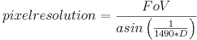

Diffraction
Contents |
What it is
Diffraction in general is the bending of waves around an obstacle. In photography the light waves are bent around the edges of the aperture, causing f.e. the well known star like pattern around the sun if shot stopped down. Since diffraction affects any point of the image (not only very bright sources) it reduces general sharpness and limits effective resolution. Diffraction blurs any point to a pattern called "w:Airy disk".
Sharpness
Diffraction is one of four lens based factors limiting the image sharpness. Second is aberration (f.e. chromatic aberration) which is determined by lens build quality. Third is de-focus or Depth of Field. Fourth is motion blur due to lens shake.
Diffraction depends only on the physical aperture size. Hence it's effect is generally larger the smaller the used sensor is due to the larger magnification of the image. That's the reason why compact cameras can't (or shouldn't) be stopped down further than f/5.6. As a rule of thumb the limit for APS-C sized sensors is f/8 to f/11 and for full frame ones f/16 to f/22.
You can balance Depth of Field against diffraction. An approach is the sharpest aperture. See link at the bottom.
Resolution
The maximum obtainable resolution is limited by diffraction according to the Rayleigh criterion. We can safely assume the equivalent of one pixel distance as the minimum resolvable distance required by the Rayleigh criterion. Since this criterion defines the angular resolution it can be directly used for zoomable panoramas neglecting sensor sizes etc. By simply dividing the panorama Field of View (FoV) by the angular resolution we get the maximum possible pixel resolution.
For an average value we take the wavelength of light λ = 550nm = 5.5*10-4mm which is in the middle of the spectrum and a color where our eyes are most sensitive. The resulting formula is:

D is the physical diameter of the lens' entrance pupil, which is the focal length in mm divided by the f-number. The following table shows the maximum angular resolution in pixels/degree which is obtainable by a given focal length (vertical) and f-number (horizontal) without regard to currently available sensors for an ideal lens without aberrations:
2.8 4 5.6 8 11 16 22 32 44 50 464 325 232 163 118 81 59 41 30 100 929 650 464 325 236 163 118 81 59 200 1,858 1,300 929 650 473 325 236 163 118 400 3,715 2,601 1,858 1,300 946 650 473 325 236 800 7,430 5,201 3,715 2,601 1,891 1,300 946 650 473 1200 11,145 7,802 5,573 3,901 2,837 1,950 1,418 975 709
Some usage examples
- You want to shoot a gigapixel panorama of 175° width with a 800mm lens at f/11. You get 175*1,891 = 330,925 pixel maximum horizontal resolution.
- You will use an APS-C format sensor in portrait orientation for this panorama. A 800mm lens has a FoV of 1.1° in that case, which at f/11 gives 2080 pixels or app. 6 megapixels. Applying the 70% rule to compensate for bayer interpolation blur indicates that 12 megapixels per image are enough.
Wide angle
Although the above formula is applicable to wide angle and fisheye lenses as well it is harder to give correct values. Most DSLR wide angle and fisheye lenses change the entrance pupil diameter depending from the angle of incidence. This is intended and serves as a mechanism to compensate for natural vignetting.
However, diffraction is an issue for those lenses, too. For a comparison of two widely used fisheyes see link at the bottom.
Caveats
Unfortunately most lenses are diffraction limited at small apertures only. Since most lens aberrations get better the further you stop down, it might be that shooting wide open gives you worse results than fully stopped down. Hence the real sharpest aperture of a particular lens must be determined by experiment.
Other factors (lens shake, atmospheric scintillation, sensor noise, haze etc.) reduce resolution and sharpness even further, hence the above values will seldom be reached.
External links
- wikipedia on Diffraction
- wikipedia on Angular resolution
- Ken Rockwell's page on Selecting the Sharpest Aperture
- Ken Rockwell's page with a sharpness comparison of the Zenitar 16mm and Nikkor 10.5mm fisheye lenses at different aperture.
- A very extensive article about resolution limits on Luminous Landscape containing many valuable links.